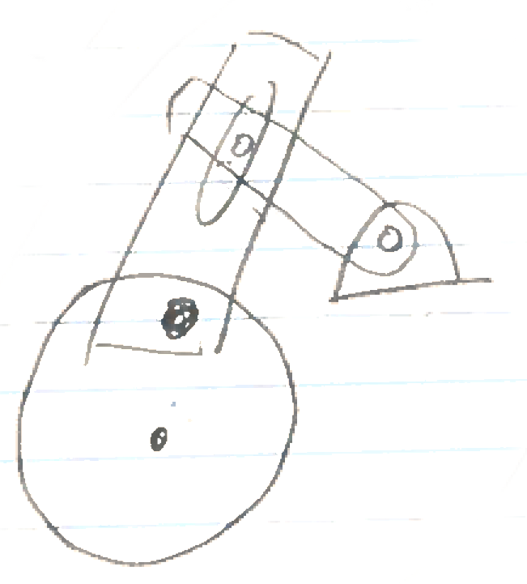
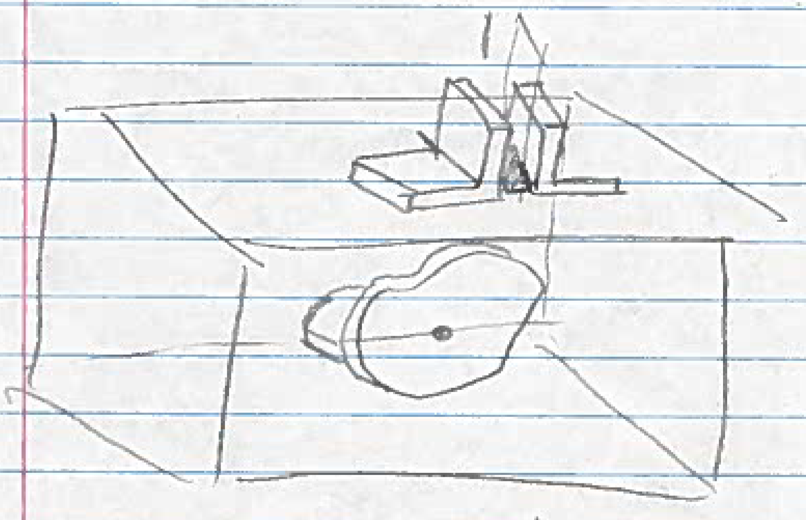
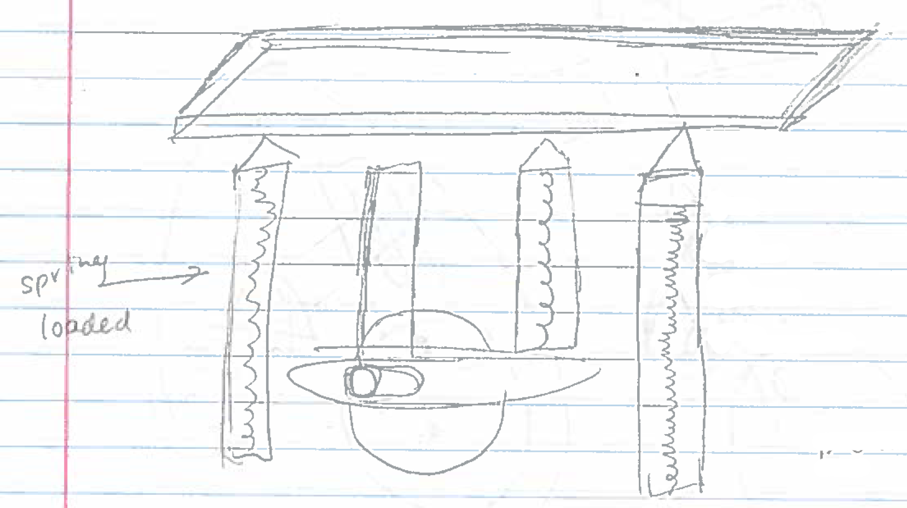
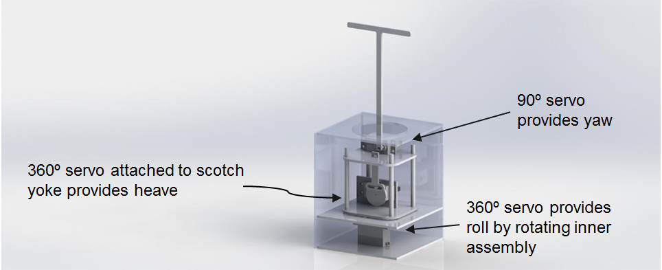
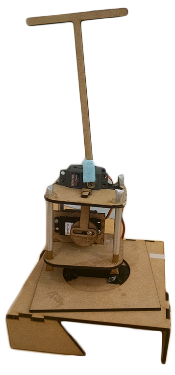
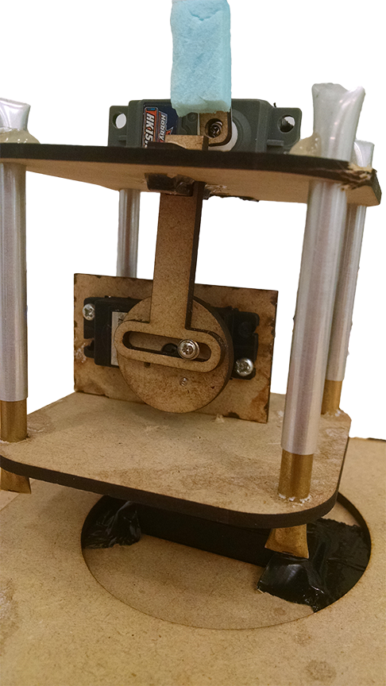

Design Phases
We had many different ideas and different input on how to replicate the Keepon motions. We eventually figured that we needed three types of motions. We then came up with various mechanical designs for these three types of motions.

To avoid using three separate motors, we tried to replicate a side-to-side and up-down motion by combining mechanisms on one motor. This had several obvious flaws after further investigation.

We looked into having a cam sliding mechanism that would allow rotation at different rates at different positions of the motor. We ditched the idea after it became clear the successfully implementating the cam slider would be difficult to implement and because better ideas came about.

We came up with a mechanism that would allow for an up-down movement. However, we weren't sure if a spring loaded pin would add structural integrity without ruining the motion. We eventually replaced this idea with telescoping pipes, which did the same thing.
Mechanical Model
First Iteration

